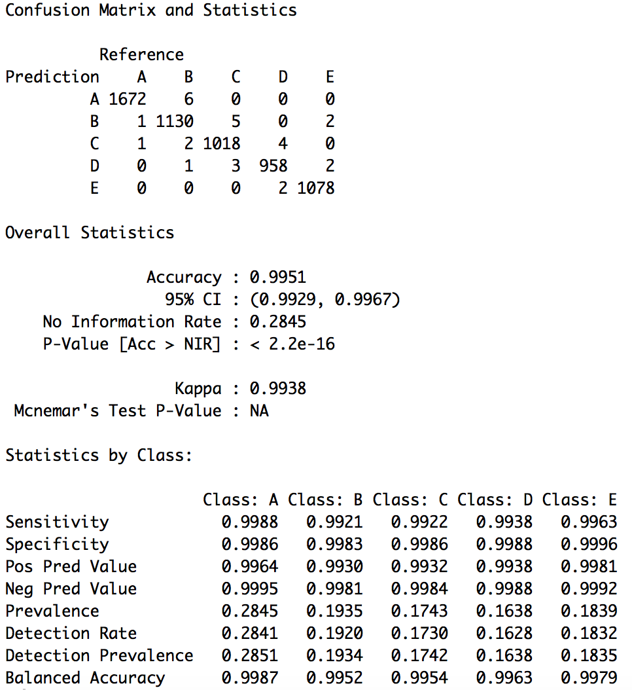

Using devices such as Jawbone Up, Nike FuelBand, and Fitbit it is now possible to collect a large amount of data about personal activity relatively inexpensively. These type of devices are part of the quantified self movement – a group of enthusiasts who take measurements about themselves regularly to improve their health, to find patterns in their behavior, or because they are tech geeks. One thing that people regularly do is quantify how much of a particular activity they do, but they rarely quantify how well they do it. In this project, your goal will be to use data from accelerometers on the belt, forearm, arm, and dumbell of 6 participants. They were asked to perform barbell lifts correctly and incorrectly in 5 different ways. More information is available from the website here: http://web.archive.org/web/20161224072740/http:/groupware.les.inf.puc-rio.br/har (see the section on the Weight Lifting Exercise Dataset).
The training data for this project are available here: https://d396qusza40orc.cloudfront.net/predmachlearn/pml-training.csv
The test data are available here: https://d396qusza40orc.cloudfront.net/predmachlearn/pml-testing.csv
The data for this project come from this source: http://web.archive.org/web/20161224072740/http:/groupware.les.inf.puc-rio.br/har. If you use the document you create for this class for any purpose please cite them as they have been very generous in allowing their data to be used for this kind of assignment.
Load required package
library(caret)
library(rpart）
library(rpart.plot)
library(randomForest)
library(corrplot)
library(rattle)
library(gbm)
Load the same seed
set.seed(1)
trainUrl <- "https://d396qusza40orc.cloudfront.net/predmachlearn/pml-training.csv"
testUrl <- "https://d396qusza40orc.cloudfront.net/predmachlearn/pml-testing.csv"
training <- read.csv(url(trainUrl), na.strings=c("NA","#DIV/0!",""))
testing <- read.csv(url(testUrl), na.strings=c("NA","#DIV/0!",""))
Remove columns that contain NA missing values
training <- training[,colSums(is.na(training))==0]
testing <- testing[,colSums(is.na(testing))==0]
Remove columns of non-accelerometer measurements
classe <- training$classe
trainingRemoved <- grepl("^X|timestamp|window", names(training))
training <- training[,!trainingRemoved]
trainingCleaned <- training[, sapply(training, is.numeric)]
trainingCleaned$classe <- classe
testingRemoved <- grepl("^X|timestamp|window", names(testing))
testing <- testing[,!testingRemoved]
testingCleaned <- testing[, sapply(testing, is.numeric)]
Remove NearZeroVariance
nzv <- nearZeroVar(trainingCleaned, saveMetrics=TRUE)
trainingCleaned <- trainingCleaned[,nzv$nzv==FALSE]
nzv <- nearZeroVar(testingCleaned,saveMetrics=TRUE)
testingCleaned <- testingCleaned[,nzv$nzv==FALSE]
Cleaned training set: 19622 observations and 53 variables
Cleaned testing set: 20 observations and 53 variables
Splicing training data set into 2 data sets, 70% for myTraining, 40% for myTesting
inTrain <- createDataPartition(y=trainingCleaned$classe, p=0.7, list=FALSE)
myTraining <- trainingCleaned[inTrain,]
myTesting <- trainingCleaned[-inTrain,]
3 different model algorithms were tested
Cross Validation: 5-fold
fitControl <- trainControl(method="cv",number=5)
modelRF <- train(
classe ~.,
data=myTraining,
trControl=fitControl,
method="rf",
ntree=100
)
save(modelRF, file="./ModelFitRF.RData")
modelCART <- train(
classe ~.,
data=myTraining,
trControl=fitControl,
method="rpart"
)
save(modelCART, file="./ModelFitCART.RData")
modelGBM <- train(
classe ~.,
data=myTraining,
trControl=fitControl,
method="gbm"
)
save(modelGBM, file="./ModelFitGBM.RData")
predictRF <- predict(modelRF, newdata=myTesting)
cmRF <- confusionMatrix(predictRF, myTesting$classe)
predictCART <- predict(modelCART, newdata=myTesting)
cmCART <- confusionMatrix(predictCART, myTesting$classe)
predictGBM <- predict(modelGBM, newdata=myTesting)
cmGBM <- confusionMatrix(predictGBM, myTesting$classe)
AccuracyResults <- data.frame(
Model=c("RF","CART","GBM"),
Accuracy=rbind(cmRF$overall[1],cmCART$overall[1],cmGBM$overall[1])
)
print(AccuracyResults)
Model Accuracy The most accurate model is Random Forest
cmRF
Confusion Matrix of Random Forest

result <- predict(modelRF, testingCleaned[, -length(names(testingCleaned))])
result
[1] B A B A A E D B A A B C B A E E A B B B